Human and Mammalian Brain Atlas (HMBA) - Marmoset Subcortex 10X snRNA-seq: Clustering and annotations#
The Marmoset Subcortical Cell Atlas (MSCA), is a multiomic atlas of the common marmoset (Callithrix jacchus) subcortex that integrates single nucleus transcriptomics, chromatin accessibility, and spatial transcriptomics. Part of the Human and Mammalian Brain Atlas (HMBA) effort within the NIH’s BRAIN Initiative® Cell Atlas Network (BICAN), this dataset comprehensively samples key subcortical structures in the non-human primate, including the hippocampal formation, amygdala, olfactory areas, basal forebrain, thalamus, hypothalamus, midbrain, and major hindbrain structures (excluding cerebellar cortex).
The MSCA reference cell type taxonomy clustered ~680k snRNA-seq cells to resolve 1,737 transcriptomic Clusters, which are hierarchically organized in 212 Groups and 17 Classes. Mapping 5.6 million Xenium spatial transcriptomics cells to these Clusters provided anatomical anchoring and nomenclature to the annotated Group and Class levels. Clusters localized to basal ganglia nuclei inherited their Group labels from the companion HMBA Basal Ganglia Cross-Species Consensus Taxonomy.
For more information on the MSCA cell type taxonomy and the associated 10X Multiome and Xenium spatial transcriptomics datasets, please refer to the publication: Dan, Turner, DeBerardine, et al. (2026). Spatial and regulatory organization of cell identity across the primate subcortex. Cell. https://doi.org/10.1016/j.cell.2026.10.007.
You need to be connected to the internet to run this notebook or connected to a cache that has the HMBA data downloaded already.
The notebook presented here shows quick visualizations from precomputed metadata in the atlas. For examples on accessing the expression matrices, specifically selecting genes from expression matrices, see the general_accessing_10x_snRNASeq_tutorial.ipynb tutorial/example. In a related tutorial, we also show how to access and use HMBA Subcortex gene expression data.
import pandas as pd
from pathlib import Path
import numpy as np
import matplotlib.pyplot as plt
from typing import Tuple, Optional
from abc_atlas_access.abc_atlas_cache.abc_project_cache import AbcProjectCache
We will interact with the data using the AbcProjectCache. This cache object downloads data requested by the user, tracks which files have already been downloaded to your local system, and serves the path to the requested data on disk. For metadata, the cache can also directly serve up a Pandas DataFrame. See the getting_started notebook for more details on using the cache including installing it if it has not already been.
Change the download_base variable to where you would like to download the data in your system.
download_base = Path('../../data/abc_atlas')
abc_cache = AbcProjectCache.from_cache_dir(
cache_dir=download_base,
)
abc_cache.current_manifest
/Users/chris.morrison/src/abc_atlas_access/src/abc_atlas_access/abc_atlas_cache/cloud_cache.py:665: UserWarning: The manifest version recorded as last used for this cache -- releases/20261130/manifest.json-- is not a valid manifest for this dataset. Loading latest version -- releases/20261101/manifest.json -- instead.
warnings.warn(msg, UserWarning)
/Users/chris.morrison/src/abc_atlas_access/src/abc_atlas_access/abc_atlas_cache/cloud_cache.py:697: OutdatedManifestWarning: You are loading
releases/20261101/manifest.json
which is newer than the most recent manifest file you have previously been working with
releases/20261130/manifest.json
It is possible that some data files have changed between these two data releases, which will force you to re-download those data files (currently downloaded files will not be overwritten). To continue using releases/20261130/manifest.json, run
type.load_manifest('releases/20261130/manifest.json')
warnings.warn(msg, OutdatedManifestWarning)
'releases/20261130/manifest.json'
Data overview#
We’ll quickly walk through the data we will be using in this notebook. The HMBA-Subcortex 10X datasets are located across several directories listed in the ABCProjectCache. Below are the directories where the subcortex data can be found:
HMBA-Subcortex-10xMultiome-Marmoset
HMBA-Subcortex-taxonomy-Marmoset
Below we list the data and metadata in the HMBA–Subcortex-10xMultiome-Marmoset dataset.
print("HMBA--Subcortex-10xMultiome-Marmoset: gene expression data (h5ad)\n\t", abc_cache.list_expression_matrix_files(directory='HMBA-Subcortex-10xMultiome-Marmoset'))
print("HMBA--Subcortex-10xMultiome-Marmoset: metadata (csv)\n\t", abc_cache.list_metadata_files(directory='HMBA-Subcortex-10xMultiome-Marmoset'))
HMBA--Subcortex-10xMultiome-Marmoset: gene expression data (h5ad)
['HMBA-Subcortex-10xMultiome-Marmoset/log2', 'HMBA-Subcortex-10xMultiome-Marmoset/raw']
HMBA--Subcortex-10xMultiome-Marmoset: metadata (csv)
['abbreviation_term', 'barcoded_cell_sample', 'cell_metadata', 'cluster_annotation_to_abbreviation_term', 'cluster_to_dominant_region', 'cluster_to_neurotransmitter', 'donor', 'example_gene_expression', 'gene', 'value_sets']
We will also use metadata from the HMBA-Subcortex taxonomy directory. Below is the list of available files:
print("HMBA-Subcortex-taxonomy-Marmoset: metadata (csv)\n\t", abc_cache.list_metadata_files(directory='HMBA-Subcortex-taxonomy-Marmoset'))
HMBA-Subcortex-taxonomy-Marmoset: metadata (csv)
['abbreviation_term', 'cell_2d_embedding_coordinates', 'cell_to_cluster_membership', 'cluster', 'cluster_annotation_term', 'cluster_annotation_term_set', 'cluster_annotation_to_abbreviation_map', 'cluster_to_cluster_annotation_membership', 'cluster_to_dominant_region', 'cluster_to_neurotransmitter', 'value_sets']
Cell metadata#
Essential cell metadata is stored as a CSV file that we load as a Pandas DataFrame. Each row represents one cell indexed by a cell label. The cell label is the concatenation of barcode and name of the sample. In this context, the sample is the barcoded cell sample that represents a single load into one port of the 10x Chromium. Note that cell barcodes are only unique within a single barcoded cell sample and that the same barcode can be reused.
Each cell is associated with a library label, donor label, alignment_job_id, feature_matrix_label and dataset_label identifying which data package this cell is part of. This metadata file will be combined with other metadata files that ship with this package to add information associated with the donor, UMAP coordinates, cluster assignments, and more.
Below, we load the first of the metadata used in this tutorial. This represents the cell metadata for the aligned dataset.
The command we use below both downloads the data if it is not already available in the local cache and loads the data as a Pandas DataFrame. This pattern of loading metadata is repeated throughout the tutorials.
cell = abc_cache.get_metadata_dataframe(
directory='HMBA-Subcortex-10xMultiome-Marmoset',
file_name='cell_metadata',
dtype={'cell_label': str},
).set_index('cell_label')
print("Number of cells = ", len(cell))
cell.head()
cell_metadata.csv: 100%|██████████| 105M/105M [00:16<00:00, 6.25MMB/s]
Number of cells = 678917
| barcoded_cell_sample_label | nCount_RNA | nFeature_RNA | doublet_score | donor_label | alignment_job_id | In_BG_taxonomy_dataset | feature_matrix_label | dataset_label | |
|---|---|---|---|---|---|---|---|---|---|
| cell_label | |||||||||
| GTTCCTGGTTAGCATG-P0005_1 | P0005_1 | 33732 | 6363 | 0.118006 | CJ23.56.002 | 240822 | 1 | HMBA-Subcortex-10xMultiome-Marmoset | HMBA-Subcortex-10xMultiome-Marmoset |
| TACTGAGGTTAGGATT-P0005_1 | P0005_1 | 29309 | 6123 | 0.520672 | CJ23.56.002 | 240822 | 1 | HMBA-Subcortex-10xMultiome-Marmoset | HMBA-Subcortex-10xMultiome-Marmoset |
| TCTTCAAGTTTATGGG-P0005_1 | P0005_1 | 28284 | 5758 | 0.125381 | CJ23.56.002 | 240822 | 1 | HMBA-Subcortex-10xMultiome-Marmoset | HMBA-Subcortex-10xMultiome-Marmoset |
| CCCTCAGTCAGCACCA-P0005_1 | P0005_1 | 25495 | 5729 | 0.225403 | CJ23.56.002 | 240822 | 1 | HMBA-Subcortex-10xMultiome-Marmoset | HMBA-Subcortex-10xMultiome-Marmoset |
| AACTACTCACCTACTT-P0005_1 | P0005_1 | 23770 | 5132 | 0.557602 | CJ23.56.002 | 240822 | 1 | HMBA-Subcortex-10xMultiome-Marmoset | HMBA-Subcortex-10xMultiome-Marmoset |
We can use pandas groupby function to see how many unique items are associated for each field and list them out if the number of unique items is small.
def print_column_info(df):
for c in df.columns:
grouped = df[[c]].groupby(c).count()
members = ''
if len(grouped) < 30:
members = str(list(grouped.index))
print("Number of unique %s = %d %s" % (c, len(grouped), members))
print_column_info(cell)
Number of unique barcoded_cell_sample_label = 146
Number of unique nCount_RNA = 59999
Number of unique nFeature_RNA = 9231
Number of unique doublet_score = 639280
Number of unique donor_label = 4 ['CJ23.56.002', 'CJ23.56.003', 'CJ24.56.001', 'CJ24.56.004']
Number of unique alignment_job_id = 9 [231224, 240110, 240307, 240323, 240807, 240822, 241212, 250114, 250529]
Number of unique In_BG_taxonomy_dataset = 2 [0, 1]
Number of unique feature_matrix_label = 1 ['HMBA-Subcortex-10xMultiome-Marmoset']
Number of unique dataset_label = 1 ['HMBA-Subcortex-10xMultiome-Marmoset']
Donor and Barcoded Cell Sample metadata#
The first two associated metadata we load are the donor and barcoded_cell_sample tables. The donor table contains species, sex, and age information. The barcoded_cell_sample table contains on 10X methods, the tissue was extracted from, and the aliquots that went in processing.
donor = abc_cache.get_metadata_dataframe(
directory='HMBA-Subcortex-10xMultiome-Marmoset',
file_name='donor'
).set_index('donor_label')
donor.head()
donor.csv: 100%|██████████| 525/525 [00:00<00:00, 10.3kMB/s]
| donor_species | species_scientific_name | species_genus | donor_sex | donor_age | donor_age_value | donor_age_unit | donor_nhash_id | |
|---|---|---|---|---|---|---|---|---|
| donor_label | ||||||||
| CJ23.56.002 | NCBITaxon:9483 | Callithrix jacchus | Marmoset | Male | 6.6 yrs | 6.555925 | years | DO-RLGX3443 |
| CJ23.56.003 | NCBITaxon:9483 | Callithrix jacchus | Marmoset | Male | 2.0 yrs | 1.958904 | years | DO-KKLW5964 |
| CJ24.56.001 | NCBITaxon:9483 | Callithrix jacchus | Marmoset | Female | 5.4 yrs | 5.391781 | years | DO-PWVO1989 |
| CJ24.56.004 | NCBITaxon:9483 | Callithrix jacchus | Marmoset | Female | 4.0 yrs | 3.956284 | years | DO-NOUP1048 |
barcoded_cell_sample = abc_cache.get_metadata_dataframe(
directory='HMBA-Subcortex-10xMultiome-Marmoset',
file_name='barcoded_cell_sample'
).set_index('barcoded_cell_sample_label')
barcoded_cell_sample.head()
barcoded_cell_sample.csv: 100%|██████████| 30.2k/30.2k [00:00<00:00, 220kMB/s]
| tissue_name | dissociated_cell_sample_name | donor_label | hemisphere | RNA_aliquot_nhash_id | ATAC_aliquot_nhash_id | cell_specimen_type | ATAC_library_technique | RNA_library_technique | parcellation_term_identifier | region_of_interest_name | region_of_interest_label | anatomical_division_label | enrichment_population | |
|---|---|---|---|---|---|---|---|---|---|---|---|---|---|---|
| barcoded_cell_sample_label | ||||||||||||||
| P0005_1 | CJ23.56.002.CX.45.MD | 231002_CJ23.56.002.CX.45.MD.Multiome | CJ23.56.002 | rh | LP-JUVUVW380563 | LP-NILLNM644050 | Nuclei | 10xMultiome;ATAC | 10xMultiome;GEX | DHBA:10155 | brain | Br | Brain | 70% NeuN+, 10% OLIG2-, 20% OLIG2+ |
| P0005_2 | CJ23.56.002.CX.45.MD | 231002_CJ23.56.002.CX.45.MD.Multiome | CJ23.56.002 | rh | LP-JUVUVW380563 | LP-NILLNM644050 | Nuclei | 10xMultiome;ATAC | 10xMultiome;GEX | DHBA:10155 | brain | Br | Brain | No FACS |
| P0008_1 | CJ23.56.002.CX.44.CaHdl | 231019_CJ23.56.002.CX.44.CaHdl.Multiome | CJ23.56.002 | rh | LP-ABBZBI859245 | LP-BRRSAW519135 | Nuclei | 10xMultiome;ATAC | 10xMultiome;GEX | DHBA:10155 | brain | Br | Brain | No FACS |
| P0008_2 | CJ23.56.002.CX.44.CaHdl | 231019_CJ23.56.002.CX.44.CaHdl.Multiome | CJ23.56.002 | rh | LP-ABBZBI859245 | LP-BRRSAW519135 | Nuclei | 10xMultiome;ATAC | 10xMultiome;GEX | DHBA:10155 | brain | Br | Brain | No FACS |
| P0009_1 | CJ23.56.002.CX.44.HIP-AMY | 231020_CJ23.56.002.CX.44.HIP-AMY.Multiome | CJ23.56.002 | rh | LP-ABBZBI859245 | LP-BRRSAW519135 | Nuclei | 10xMultiome;ATAC | 10xMultiome;GEX | DHBA:10155 | brain | Br | Brain | No FACS |
We combine these into an extended cell metadata table.
cell_extended = cell.join(donor, on='donor_label')
cell_extended = cell_extended.join(barcoded_cell_sample, on='barcoded_cell_sample_label', rsuffix='_barcoded_cell_sample_table')
del cell
Below we use a pandas groupby to show the number of cells from each marmoset donor.
cell_extended.groupby('donor_label')[['donor_label']].count()
| donor_label | |
|---|---|
| donor_label | |
| CJ23.56.002 | 32330 |
| CJ23.56.003 | 329353 |
| CJ24.56.001 | 221105 |
| CJ24.56.004 | 96129 |
We can also use the groupby function to show the number of cells in each tissue the cells are extracted from.
cell_extended.groupby('dissociated_cell_sample_name')[['dissociated_cell_sample_name']].count()
| dissociated_cell_sample_name | |
|---|---|
| dissociated_cell_sample_name | |
| 231002_CJ23.56.002.CX.45.MD.Multiome | 3537 |
| 231019_CJ23.56.002.CX.44.CaHdl.Multiome | 8654 |
| 231020_CJ23.56.002.CX.44.HIP-AMY.Multiome | 9229 |
| 231023_CJ23.56.002.CX.44.CaHvm-Cla.Multiome | 10910 |
| 231027_CJ23.56.003.CX.03.LH.Multiome | 11051 |
| ... | ... |
| 241112_CJ24.56.004.CX.06.04.Multiome | 6397 |
| 241112_CJ24.56.004.CX.06.05.Multiome | 11470 |
| 241118_CJ24.56.004.CX.06.06.Multiome | 9000 |
| 241118_CJ24.56.004.CX.07.01.Multiome | 5522 |
| 241119_CJ24.56.004.CX.07.02.Multiome | 6630 |
79 rows × 1 columns
Adding color and feature order#
Each major feature in the donor and library table is associated with unique colors and an ordering with the set of values. Below we load the value_sets DataFrame which is a mapping from the various value in the donor and species tables to those colors and orderings. We incorporate these values into the cell metadata table.
value_sets = abc_cache.get_metadata_dataframe(
directory='HMBA-Subcortex-10xMultiome-Marmoset',
file_name='value_sets'
).set_index('label')
value_sets.head()
value_sets.csv: 100%|██████████| 3.59k/3.59k [00:00<00:00, 33.4kMB/s]
| table | field | description | order | external_identifier | parent_label | color_hex_triplet | |
|---|---|---|---|---|---|---|---|
| label | |||||||
| Female | donor | donor_sex | Female | 1 | NaN | NaN | #565353 |
| Male | donor | donor_sex | Male | 2 | NaN | NaN | #ADC4C3 |
| Human | donor | species_genus | Human | 1 | NCBITaxon:9605 | NaN | #377eb8 |
| Macaque | donor | species_genus | Macaque | 2 | NCBITaxon:9539 | NaN | #4daf4a |
| Marmoset | donor | species_genus | Marmoset | 3 | NCBITaxon:9481 | NaN | #FF5F5D |
We define a convince function to add colors for the various values in the data (e.g. unique region of interest or donor sex values).
def extract_value_set(
cell_metadata_df: pd.DataFrame,
input_value_set: pd.DataFrame,
input_value_set_label: str,
value_set_label: str=None
):
"""Add color and order columns to the cell metadata dataframe based on the input
value set.
Columns are added as {input_value_set_label}_color and {input_value_set_label}_order.
Parameters
----------
cell_metadata_df : pd.DataFrame
DataFrame containing cell metadata.
input_value_set : pd.DataFrame
DataFrame containing the value set information.
input_value_set_label : str
The the column name to extract color and order information for. will be added to the cell metadata.
"""
if value_set_label is None:
value_set_label = input_value_set_label
cell_metadata_df[f'{input_value_set_label}_color'] = input_value_set[
input_value_set['field'] == value_set_label
].loc[cell_metadata_df[input_value_set_label]]['color_hex_triplet'].values
cell_metadata_df[f'{input_value_set_label}_order'] = input_value_set[
input_value_set['field'] == value_set_label
].loc[cell_metadata_df[input_value_set_label]]['order'].values
Use our function to add the relevant color and order columns to our cell_metadata table.
# Add region of interest color and order
extract_value_set(cell_extended, value_sets, 'region_of_interest_label')
# Add species common name color and order
extract_value_set(cell_extended, value_sets, 'species_genus')
# Add species scientific name color and order
extract_value_set(cell_extended, value_sets, 'species_scientific_name')
# Add donor sex color and order
extract_value_set(cell_extended, value_sets, 'donor_sex')
cell_extended.head()
| barcoded_cell_sample_label | nCount_RNA | nFeature_RNA | doublet_score | donor_label | alignment_job_id | In_BG_taxonomy_dataset | feature_matrix_label | dataset_label | donor_species | ... | anatomical_division_label | enrichment_population | region_of_interest_label_color | region_of_interest_label_order | species_genus_color | species_genus_order | species_scientific_name_color | species_scientific_name_order | donor_sex_color | donor_sex_order | |
|---|---|---|---|---|---|---|---|---|---|---|---|---|---|---|---|---|---|---|---|---|---|
| cell_label | |||||||||||||||||||||
| GTTCCTGGTTAGCATG-P0005_1 | P0005_1 | 33732 | 6363 | 0.118006 | CJ23.56.002 | 240822 | 1 | HMBA-Subcortex-10xMultiome-Marmoset | HMBA-Subcortex-10xMultiome-Marmoset | NCBITaxon:9483 | ... | Brain | 70% NeuN+, 10% OLIG2-, 20% OLIG2+ | #E0E0E0 | 1 | #FF5F5D | 3 | #FF5F5D | 4 | #ADC4C3 | 2 |
| TACTGAGGTTAGGATT-P0005_1 | P0005_1 | 29309 | 6123 | 0.520672 | CJ23.56.002 | 240822 | 1 | HMBA-Subcortex-10xMultiome-Marmoset | HMBA-Subcortex-10xMultiome-Marmoset | NCBITaxon:9483 | ... | Brain | 70% NeuN+, 10% OLIG2-, 20% OLIG2+ | #E0E0E0 | 1 | #FF5F5D | 3 | #FF5F5D | 4 | #ADC4C3 | 2 |
| TCTTCAAGTTTATGGG-P0005_1 | P0005_1 | 28284 | 5758 | 0.125381 | CJ23.56.002 | 240822 | 1 | HMBA-Subcortex-10xMultiome-Marmoset | HMBA-Subcortex-10xMultiome-Marmoset | NCBITaxon:9483 | ... | Brain | 70% NeuN+, 10% OLIG2-, 20% OLIG2+ | #E0E0E0 | 1 | #FF5F5D | 3 | #FF5F5D | 4 | #ADC4C3 | 2 |
| CCCTCAGTCAGCACCA-P0005_1 | P0005_1 | 25495 | 5729 | 0.225403 | CJ23.56.002 | 240822 | 1 | HMBA-Subcortex-10xMultiome-Marmoset | HMBA-Subcortex-10xMultiome-Marmoset | NCBITaxon:9483 | ... | Brain | 70% NeuN+, 10% OLIG2-, 20% OLIG2+ | #E0E0E0 | 1 | #FF5F5D | 3 | #FF5F5D | 4 | #ADC4C3 | 2 |
| AACTACTCACCTACTT-P0005_1 | P0005_1 | 23770 | 5132 | 0.557602 | CJ23.56.002 | 240822 | 1 | HMBA-Subcortex-10xMultiome-Marmoset | HMBA-Subcortex-10xMultiome-Marmoset | NCBITaxon:9483 | ... | Brain | 70% NeuN+, 10% OLIG2-, 20% OLIG2+ | #E0E0E0 | 1 | #FF5F5D | 3 | #FF5F5D | 4 | #ADC4C3 | 2 |
5 rows × 39 columns
UMAP spatial embedding#
Now that we’ve merged our donor and library metadata into the main cells data, our next step is to plot these values in the Uniform Manifold Approximation and Projection (UMAP) for cells in the dataset. The UMAP is a dimension reduction technique that can be used for visualizing and exploring large-dimension datasets.
Below we load this 2-D embedding for a sub selection of our cells and merge the x-y coordinates into the extended cell metadata we are creating.
cell_2d_embedding_coordinates = abc_cache.get_metadata_dataframe(
directory='HMBA-Subcortex-taxonomy-Marmoset',
file_name='cell_2d_embedding_coordinates'
).set_index('cell_label')
cell_2d_embedding_coordinates.head()
cell_2d_embedding_coordinates.csv: 100%|██████████| 30.5M/30.5M [00:04<00:00, 6.65MMB/s]
| x | y | |
|---|---|---|
| cell_label | ||
| GTTCCTGGTTAGCATG-P0005_1 | 14.662888 | 10.134843 |
| TACTGAGGTTAGGATT-P0005_1 | -8.280969 | 18.335058 |
| TCTTCAAGTTTATGGG-P0005_1 | 7.183354 | 13.461928 |
| CCCTCAGTCAGCACCA-P0005_1 | 7.140094 | 13.440581 |
| AACTACTCACCTACTT-P0005_1 | -8.869915 | 18.777521 |
cell_extended = cell_extended.join(cell_2d_embedding_coordinates)
cell_extended = cell_extended.sample(frac=1)
del cell_2d_embedding_coordinates
We define a small helper function plot_umap to visualize the cells on the UMAP. In the examples below we will plot associated cell information colorized by sex.
def plot_umap(
xx: np.ndarray,
yy: np.ndarray,
cc: np.ndarray = None,
val: np.ndarray = None,
fig_width: float = 8,
fig_height: float = 8,
cmap: Optional[plt.Colormap] = None,
labels: np.ndarray = None,
term_orders: np.ndarray = None,
colorbar: bool = False,
sizes: np.ndarray = None
) -> Tuple[plt.Figure, plt.Axes]:
"""
Plot a scatter plot of the UMAP coordinates.
Parameters
----------
xx : array-like
x-coordinates of the points to plot.
yy : array-like
y-coordinates of the points to plot.
cc : array-like, optional
colors of the points to plot. If None, the points will be colored by the values in `val`.
val : array-like, optional
values of the points to plot. If None, the points will be colored by the values in `cc`.
fig_width : float, optional
width of the figure in inches. Default is 8.
fig_height : float, optional
height of the figure in inches. Default is 8.
cmap : str, optional
colormap to use for coloring the points. If None, the points will be colored by the values in `cc`.
labels : array-like, optional
labels for the points to plot. If None, no labels will be added to the plot.
term_orders : array-like, optional
order of the labels for the legend. If None, the labels will be ordered by their appearance in `labels`.
colorbar : bool, optional
whether to add a colorbar to the plot. Default is False.
sizes : array-like, optional
sizes of the points to plot. If None, all points will have the same size.
"""
if sizes is None:
sizes = 1
fig, ax = plt.subplots()
fig.set_size_inches(fig_width, fig_height)
if cmap is not None:
scatt = ax.scatter(xx, yy, c=val, s=0.5, marker='.', cmap=cmap, alpha=sizes)
elif cc is not None:
scatt = ax.scatter(xx, yy, c=cc, s=0.5, marker='.', alpha=sizes)
if labels is not None:
from matplotlib.patches import Rectangle
unique_label_colors = (labels + ',' + cc).unique()
unique_labels = np.array([label_color.split(',')[0] for label_color in unique_label_colors])
unique_colors = np.array([label_color.split(',')[1] for label_color in unique_label_colors])
if term_orders is not None:
unique_order = term_orders.unique()
term_order = np.argsort(unique_order)
unique_labels = unique_labels[term_order]
unique_colors = unique_colors[term_order]
rects = []
for color in unique_colors:
rects.append(Rectangle((0, 0), 1, 1, fc=color))
legend = ax.legend(rects, unique_labels, loc=1)
# ax.add_artist(legend)
if colorbar:
fig.colorbar(scatt, ax=ax)
return fig, ax
Plot the various donor and library metadata available.
fig, ax = plot_umap(
cell_extended['x'],
cell_extended['y'],
cc=cell_extended['donor_sex_color'],
labels=cell_extended['donor_sex'],
term_orders=cell_extended['donor_sex_order'],
fig_width=12,
fig_height=12
)
res = ax.set_title("donor_sex")
plt.show()
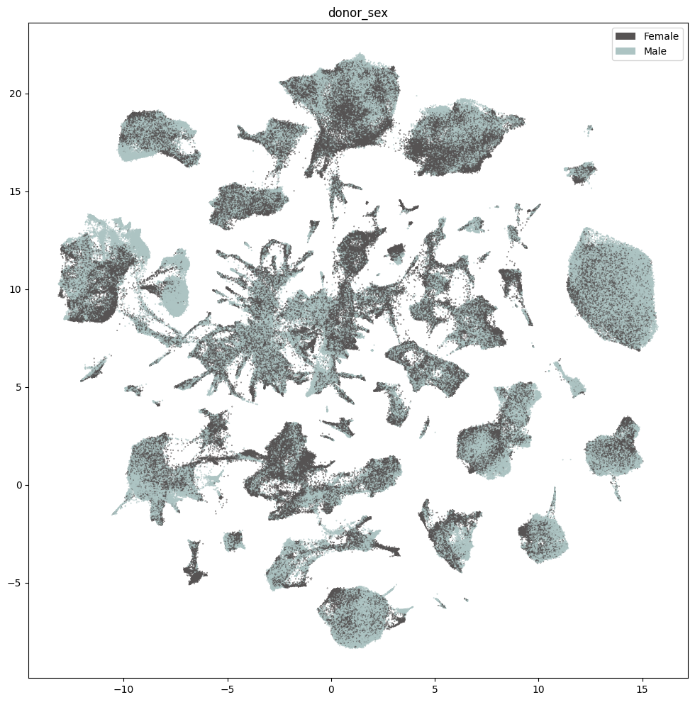
Below we show the region of interest for the Subcortex data. However, that Marmoset does not have fine grained ROIs available and is marked as Br - Brain. Later in this tutorial, we’ll show the derived regions from the taxonomy.
fig, ax = plot_umap(
cell_extended['x'],
cell_extended['y'],
cc=cell_extended['region_of_interest_label_color'],
labels=cell_extended['region_of_interest_label'],
term_orders=cell_extended['region_of_interest_label_order'],
fig_width=12,
fig_height=12
)
res = ax.set_title("region_of_interest_label")
plt.show()
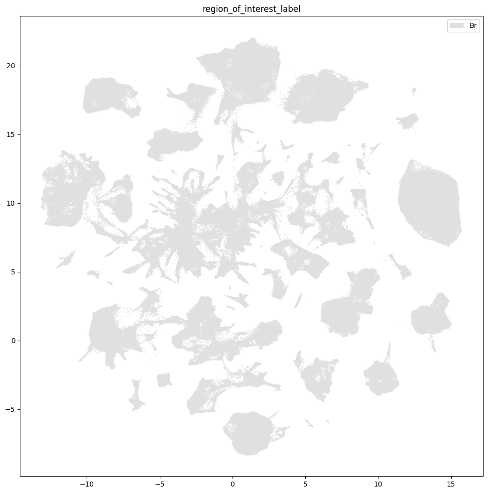
Taxonomy Information#
The final set of metadata we load into our extended cell metadata file maps the cells into their assigned cluster in the taxonomy. We additionally load metadata for the clusters and compute useful information, such as the number of cells in each taxon at each level of the taxonomy.
First, we load information associated with each Cluster in the taxonomy. This includes a useful alias value for each cluster as well as the number of cells in each cluster.
cluster = abc_cache.get_metadata_dataframe(
directory='HMBA-Subcortex-taxonomy-Marmoset',
file_name='cluster',
dtype={'number_of_cells': 'Int64'},
).rename(columns={'label': 'cluster_annotation_term_label'}).set_index('cluster_annotation_term_label')
cluster.head()
cluster.csv: 100%|██████████| 64.6k/64.6k [00:00<00:00, 368kMB/s]
| cluster_alias | number_of_cells | |
|---|---|---|
| cluster_annotation_term_label | ||
| CS20260831_LVL2_0000 | cluster_1798 | 11 |
| CS20260831_LVL2_0001 | cluster_1799 | 33 |
| CS20260831_LVL2_0002 | cluster_1313 | 300 |
| CS20260831_LVL2_0003 | cluster_1314 | 94 |
| CS20260831_LVL2_0004 | cluster_1315 | 77 |
Next, we load the table that describes the levels in the taxonomy from Class at the highest to Cluster at the lowest level.
cluster_annotation_term_set = abc_cache.get_metadata_dataframe(
directory='HMBA-Subcortex-taxonomy-Marmoset',
file_name='cluster_annotation_term_set',
).rename(columns={'label': 'cluster_annotation_term_label'})
cluster_annotation_term_set
cluster_annotation_term_set.csv: 100%|██████████| 183/183 [00:00<00:00, 2.62kMB/s]
| name | cluster_annotation_term_label | description | order | parent_term_set_label | |
|---|---|---|---|---|---|
| 0 | Class | CCN20260831_LVL0 | Class | 0 | NaN |
| 1 | Group | CCN20260831_LVL1 | Group | 1 | CCN20260831_LVL0 |
| 2 | Cluster | CCN20260831_LVL2 | Cluster | 2 | CCN20260831_LVL1 |
For the clusters, we load information on the annotations for each cluster. This also includes the term order and color information which we will use to plot later.
cluster_annotation_term = abc_cache.get_metadata_dataframe(
directory='HMBA-Subcortex-taxonomy-Marmoset',
file_name='cluster_annotation_term',
).rename(columns={'label': 'cluster_annotation_term_label'}).set_index('cluster_annotation_term_label')
cluster_annotation_term.head()
cluster_annotation_term.csv: 100%|██████████| 252k/252k [00:00<00:00, 1.71MMB/s]
| name | cluster_annotation_term_set_label | cluster_annotation_term_set_name | color_hex_triplet | term_order | term_set_order | parent_term_label | parent_term_name | parent_term_set_label | external_label | |
|---|---|---|---|---|---|---|---|---|---|---|
| cluster_annotation_term_label | ||||||||||
| CS20260831_LVL0_00 | CNU-HTH Glut | CCN20260831_LVL0 | Class | #56B4E9 | 1 | 0 | NaN | NaN | NaN | NaN |
| CS20260831_LVL0_01 | CNU-HTH GABA | CCN20260831_LVL0 | Class | #E69F00 | 2 | 0 | NaN | NaN | NaN | NaN |
| CS20260831_LVL0_02 | HTH Glut | CCN20260831_LVL0 | Class | #0072B2 | 3 | 0 | NaN | NaN | NaN | NaN |
| CS20260831_LVL0_03 | HTH GABA | CCN20260831_LVL0 | Class | #F0E442 | 4 | 0 | NaN | NaN | NaN | NaN |
| CS20260831_LVL0_04 | HTH Hist | CCN20260831_LVL0 | Class | #D55E00 | 5 | 0 | NaN | NaN | NaN | NaN |
Finally, we load the cluster to cluster annotation membership table. Each row in this table is a mapping between the clusters and every level of the taxonomy it belongs to, including itself. We’ll use this table in a groupbys to allow us to count up the number of clusters at each taxonomy level and sum the number of cells in each taxon in the taxonomy a all levels.
cluster_to_cluster_annotation_membership = abc_cache.get_metadata_dataframe(
directory='HMBA-Subcortex-taxonomy-Marmoset',
file_name='cluster_to_cluster_annotation_membership',
).set_index('cluster_annotation_term_label')
membership_with_cluster_info = cluster_to_cluster_annotation_membership.join(
cluster.reset_index().set_index('cluster_alias')[['number_of_cells']],
on='cluster_alias'
)
membership_with_cluster_info = membership_with_cluster_info.join(cluster_annotation_term, rsuffix='_anno_term').reset_index()
membership_groupby = membership_with_cluster_info.groupby(
['cluster_alias', 'cluster_annotation_term_set_name']
)
membership_with_cluster_info.head()
cluster_to_cluster_annotation_membership.csv: 100%|██████████| 358k/358k [00:00<00:00, 1.81MMB/s]
| cluster_annotation_term_label | cluster_annotation_term_set_name | cluster_annotation_term_name | cluster_alias | cluster_annotation_term_set_label | number_of_cells | name | cluster_annotation_term_set_label_anno_term | cluster_annotation_term_set_name_anno_term | color_hex_triplet | term_order | term_set_order | parent_term_label | parent_term_name | parent_term_set_label | external_label | |
|---|---|---|---|---|---|---|---|---|---|---|---|---|---|---|---|---|
| 0 | CS20260831_LVL0_00 | Class | CNU-HTH Glut | cluster_1798 | CCN20260831_LVL0 | 11 | CNU-HTH Glut | CCN20260831_LVL0 | Class | #56B4E9 | 1 | 0 | NaN | NaN | NaN | NaN |
| 1 | CS20260831_LVL0_00 | Class | CNU-HTH Glut | cluster_1799 | CCN20260831_LVL0 | 33 | CNU-HTH Glut | CCN20260831_LVL0 | Class | #56B4E9 | 1 | 0 | NaN | NaN | NaN | NaN |
| 2 | CS20260831_LVL0_00 | Class | CNU-HTH Glut | cluster_1313 | CCN20260831_LVL0 | 300 | CNU-HTH Glut | CCN20260831_LVL0 | Class | #56B4E9 | 1 | 0 | NaN | NaN | NaN | NaN |
| 3 | CS20260831_LVL0_00 | Class | CNU-HTH Glut | cluster_1314 | CCN20260831_LVL0 | 94 | CNU-HTH Glut | CCN20260831_LVL0 | Class | #56B4E9 | 1 | 0 | NaN | NaN | NaN | NaN |
| 4 | CS20260831_LVL0_00 | Class | CNU-HTH Glut | cluster_1315 | CCN20260831_LVL0 | 77 | CNU-HTH Glut | CCN20260831_LVL0 | Class | #56B4E9 | 1 | 0 | NaN | NaN | NaN | NaN |
From the membership table, we create three tables via a groupby. First the name of each cluster and its parents.
# term_sets = abc_cache.get_metadata_dataframe(directory='WHB-taxonomy', file_name='cluster_annotation_term_set').set_index('label')
cluster_details = membership_groupby['cluster_annotation_term_name'].first().unstack()
cluster_details = cluster_details[cluster_annotation_term_set['name']] # order columns
cluster_details.sort_values(['Class', 'Group', 'Cluster'], inplace=True)
cluster_details.head()
| cluster_annotation_term_set_name | Class | Group | Cluster |
|---|---|---|---|
| cluster_alias | |||
| cluster_249 | BG | AMY-STR ITC-NUDAP eSPN | cluster_249 |
| cluster_254 | BG | AMY-STR ITC-NUDAP eSPN | cluster_254 |
| cluster_255 | BG | AMY-STR ITC-NUDAP eSPN | cluster_255 |
| cluster_256 | BG | AMY-STR ITC-NUDAP eSPN | cluster_256 |
| cluster_257 | BG | AMY-STR ITC-NUDAP eSPN | cluster_257 |
Next the plotting order of each of the clusters and their parents.
cluster_order = membership_groupby['term_order'].first().unstack()
cluster_order.sort_values(['Class', 'Group', 'Cluster'], inplace=True)
cluster_order.rename(
columns={'Class': 'Class_order',
'Group': 'Group_order',
'Cluster': 'Cluster_order'},
inplace=True
)
cluster_order.head()
| cluster_annotation_term_set_name | Class_order | Cluster_order | Group_order |
|---|---|---|---|
| cluster_alias | |||
| cluster_1798 | 1 | 1 | 1 |
| cluster_1799 | 1 | 2 | 1 |
| cluster_1313 | 1 | 3 | 2 |
| cluster_1314 | 1 | 4 | 2 |
| cluster_1315 | 1 | 5 | 2 |
Finally, the colors we will use to plot for each of the unique taxons at all levels.
cluster_colors = membership_groupby['color_hex_triplet'].first().unstack()
cluster_colors = cluster_colors[cluster_annotation_term_set['name']]
cluster_colors.sort_values(['Class', 'Group', 'Cluster'], inplace=True)
cluster_colors.head()
| cluster_annotation_term_set_name | Class | Group | Cluster |
|---|---|---|---|
| cluster_alias | |||
| cluster_1730 | #0072B2 | #047b9f | #ee7e46 |
| cluster_331 | #0072B2 | #447E6C | #1a1726 |
| cluster_330 | #0072B2 | #447E6C | #a579bc |
| cluster_329 | #0072B2 | #447E6C | #bd94a9 |
| cluster_326 | #0072B2 | #447E6C | #c6525a |
Next, we bring it all together by loading the mapping of cells to cluster and join into our final metadata table.
cell_to_cluster_membership = abc_cache.get_metadata_dataframe(
directory='HMBA-Subcortex-taxonomy-Marmoset',
file_name='cell_to_cluster_membership',
).set_index('cell_label')
cell_to_cluster_membership.head()
cell_to_cluster_membership.csv: 100%|██████████| 39.4M/39.4M [00:06<00:00, 6.23MMB/s]
| cluster_alias | label | |
|---|---|---|
| cell_label | ||
| GTTCCTGGTTAGCATG-P0005_1 | cluster_1 | CS20260831_LVL2_1698 |
| TACTGAGGTTAGGATT-P0005_1 | cluster_17 | CS20260831_LVL2_1179 |
| TCTTCAAGTTTATGGG-P0005_1 | cluster_42 | CS20260831_LVL2_1165 |
| CCCTCAGTCAGCACCA-P0005_1 | cluster_41 | CS20260831_LVL2_1164 |
| AACTACTCACCTACTT-P0005_1 | cluster_18 | CS20260831_LVL2_1180 |
We merge this table with information from our clusters.
cell_extended = cell_extended.join(cell_to_cluster_membership, rsuffix='_cell_to_cluster_membership')
cell_extended = cell_extended.join(cluster_details, on='cluster_alias')
cell_extended = cell_extended.join(cluster_colors, on='cluster_alias', rsuffix='_color')
cell_extended = cell_extended.join(cluster_order, on='cluster_alias')
del cell_to_cluster_membership
cell_extended.head()
| barcoded_cell_sample_label | nCount_RNA | nFeature_RNA | doublet_score | donor_label | alignment_job_id | In_BG_taxonomy_dataset | feature_matrix_label | dataset_label | donor_species | ... | label | Class | Group | Cluster | Class_color | Group_color | Cluster_color | Class_order | Cluster_order | Group_order | |
|---|---|---|---|---|---|---|---|---|---|---|---|---|---|---|---|---|---|---|---|---|---|
| cell_label | |||||||||||||||||||||
| AGCTACGTCCAAACAC-P0068_2 | P0068_2 | 8439 | 3131 | 0.052809 | CJ23.56.003 | 250114 | 1 | HMBA-Subcortex-10xMultiome-Marmoset | HMBA-Subcortex-10xMultiome-Marmoset | NCBITaxon:9483 | ... | CS20260831_LVL2_1682 | Nonneuron | Microglia | cluster_847 | #999999 | #995C60 | #867907 | 17 | 1683 | 202 |
| GTACACCCACGCAACT-P0037_1 | P0037_1 | 14962 | 4559 | 0.222681 | CJ23.56.003 | 240807 | 1 | HMBA-Subcortex-10xMultiome-Marmoset | HMBA-Subcortex-10xMultiome-Marmoset | NCBITaxon:9483 | ... | CS20260831_LVL2_1398 | BG | STR SST-RSPO2 GABA | cluster_1022 | #CBC3E3 | #f3b79b | #c33eeb | 14 | 1399 | 167 |
| CGTTTCTCACCAAAGG-P0037_1 | P0037_1 | 34829 | 6254 | 0.174866 | CJ23.56.003 | 240807 | 1 | HMBA-Subcortex-10xMultiome-Marmoset | HMBA-Subcortex-10xMultiome-Marmoset | NCBITaxon:9483 | ... | CS20260831_LVL2_0836 | TEL Glut | L2-3 IT ERC-Pir Glut | cluster_1294 | #88CCEE | #569F92 | #ca6136 | 11 | 837 | 112 |
| CGGGTCTAGAAGCTAG-P0065_1 | P0065_1 | 12563 | 4770 | 0.171022 | CJ24.56.001 | 250114 | 1 | HMBA-Subcortex-10xMultiome-Marmoset | HMBA-Subcortex-10xMultiome-Marmoset | NCBITaxon:9483 | ... | CS20260831_LVL2_1241 | BG | STRv D1 SPN | cluster_143 | #CBC3E3 | #339933 | #55b2c3 | 14 | 1242 | 154 |
| CCTGGTAAGGCTCATG-P0070_2 | P0070_2 | 16883 | 5040 | 0.343984 | CJ23.56.003 | 250114 | 1 | HMBA-Subcortex-10xMultiome-Marmoset | HMBA-Subcortex-10xMultiome-Marmoset | NCBITaxon:9483 | ... | CS20260831_LVL2_0550 | MB-HB GABA | SCsu PAX7-COL5A2 GABA | cluster_1774 | #CC79A7 | #6cbcf9 | #85b7b3 | 7 | 551 | 80 |
5 rows × 52 columns
print_column_info(cell_extended)
Number of unique barcoded_cell_sample_label = 146
Number of unique nCount_RNA = 59999
Number of unique nFeature_RNA = 9231
Number of unique doublet_score = 639280
Number of unique donor_label = 4 ['CJ23.56.002', 'CJ23.56.003', 'CJ24.56.001', 'CJ24.56.004']
Number of unique alignment_job_id = 9 [231224, 240110, 240307, 240323, 240807, 240822, 241212, 250114, 250529]
Number of unique In_BG_taxonomy_dataset = 2 [0, 1]
Number of unique feature_matrix_label = 1 ['HMBA-Subcortex-10xMultiome-Marmoset']
Number of unique dataset_label = 1 ['HMBA-Subcortex-10xMultiome-Marmoset']
Number of unique donor_species = 1 ['NCBITaxon:9483']
Number of unique species_scientific_name = 1 ['Callithrix jacchus']
Number of unique species_genus = 1 ['Marmoset']
Number of unique donor_sex = 2 ['Female', 'Male']
Number of unique donor_age = 4 ['2.0 yrs', '4.0 yrs', '5.4 yrs', '6.6 yrs']
Number of unique donor_age_value = 4 [1.95890411, 3.956284153, 5.391780822, 6.555924845]
Number of unique donor_age_unit = 1 ['years']
Number of unique donor_nhash_id = 4 ['DO-KKLW5964', 'DO-NOUP1048', 'DO-PWVO1989', 'DO-RLGX3443']
Number of unique tissue_name = 79
Number of unique dissociated_cell_sample_name = 79
Number of unique donor_label_barcoded_cell_sample_table = 4 ['CJ23.56.002', 'CJ23.56.003', 'CJ24.56.001', 'CJ24.56.004']
Number of unique hemisphere = 3 ['bi', 'lh', 'rh']
Number of unique RNA_aliquot_nhash_id = 9 ['LP-ABBZBI859245', 'LP-AVXTVI239878', 'LP-JUVUVW380563', 'LP-KLRLVS663036', 'LP-LAYKJL901871', 'LP-NURFHC541407', 'LP-PPMLPP748582', 'LP-WWUCZA657843', 'LP-WYSKLM380903']
Number of unique ATAC_aliquot_nhash_id = 9 ['LP-BRRSAW519135', 'LP-CIKMJF948273', 'LP-HIWXWY495422', 'LP-NILLNM644050', 'LP-OLUXXY486114', 'LP-RJQURX529967', 'LP-ROXYCU469098', 'LP-VSSPKK586180', 'LP-WJNOLT753178']
Number of unique cell_specimen_type = 1 ['Nuclei']
Number of unique ATAC_library_technique = 1 ['10xMultiome;ATAC']
Number of unique RNA_library_technique = 1 ['10xMultiome;GEX']
Number of unique parcellation_term_identifier = 1 ['DHBA:10155']
Number of unique region_of_interest_name = 1 ['brain']
Number of unique region_of_interest_label = 1 ['Br']
Number of unique anatomical_division_label = 1 ['Brain']
Number of unique enrichment_population = 26 ['10% NeuN+, 10% OLIG2-, 80% OLIG2+', '100% NeuN+, 0% OLIG2-, 0% OLIG2+', '11% NeuN+, 18% OLIG2-, 71% OLIG2+', '12% NeuN+, 13% OLIG2-, 75% OLIG2+', '50% NeuN+, 0% OLIG2-, 50% OLIG2+', '50% NeuN+, 8% OLIG2-, 42% OLIG2+', '54% NeuN+, 23% OLIG2-, 23% OLIG2+', '66% NeuN+, 8% OLIG2-, 26% OLIG2+', '68% NeuN+, 19% OLIG2-, 13% OLIG2+', '70% NeuN+, 0% OLIG2-, 30% OLIG2+', '70% NeuN+, 10% OLIG2-, 20% OLIG2+', '70% NeuN+, 13% OLIG2-, 17% OLIG2+', '70% NeuN+, 14% OLIG2-, 16% OLIG2+', '70% NeuN+, 19% OLIG2-, 11% OLIG2+', '70% NeuN+, 20% OLIG2-, 10% OLIG2+', '75% NeuN+, 15% OLIG2-, 10% OLIG2+', '76% NeuN+, 14% OLIG2-, 10% OLIG2+', '80% NeuN+, 10% OLIG2-, 10% OLIG2+', '84% NeuN+, 6% OLIG2-, 10% OLIG2+', '84% NeuN+, 7% OLIG2-, 9% OLIG2+', '85% NeuN+, 5% OLIG2-, 10% OLIG2+', '90% NeuN+, 0% OLIG2-, 10% OLIG2+', '90% NeuN+, 10% OLIG2-, 0% OLIG2+', 'DAPI', 'No FACS', 'Sorted NeuN']
Number of unique region_of_interest_label_color = 1 ['#E0E0E0']
Number of unique region_of_interest_label_order = 1 [1]
Number of unique species_genus_color = 1 ['#FF5F5D']
Number of unique species_genus_order = 1 [3]
Number of unique species_scientific_name_color = 1 ['#FF5F5D']
Number of unique species_scientific_name_order = 1 [4]
Number of unique donor_sex_color = 2 ['#565353', '#ADC4C3']
Number of unique donor_sex_order = 2 [1, 2]
Number of unique x = 674520
Number of unique y = 669297
Number of unique cluster_alias = 1737
Number of unique label = 1737
Number of unique Class = 17 ['BG', 'CNU-HTH GABA', 'CNU-HTH Glut', 'CTX-CGE GABA', 'CTX-MGE GABA', 'HTH GABA', 'HTH Glut', 'HTH Hist', 'MB-HB GABA', 'MB-HB Glut', 'MB-HTH-HB Sero', 'Nonneuron', 'Pineal Gland', 'SEP GABA', 'TEL Glut', 'THM GABA', 'THM Glut']
Number of unique Group = 212
Number of unique Cluster = 1737
Number of unique Class_color = 17 ['#0072B2', '#332288', '#44AA99', '#56B4E9', '#839fa3', '#882255', '#88CCEE', '#999999', '#AA4499', '#B3C65C', '#CBC3E3', '#CC79A7', '#D55E00', '#DDCC77', '#E69F00', '#F0E442', '#ce4c27']
Number of unique Group_color = 192
Number of unique Cluster_color = 1737
Number of unique Class_order = 17 [1, 2, 3, 4, 5, 6, 7, 8, 9, 10, 11, 12, 13, 14, 15, 16, 17]
Number of unique Cluster_order = 1737
Number of unique Group_order = 212
Plotting the taxonomy#
Now that we have our cells with associated taxonomy information, we’ll plot them into the UMAP we showed previously.
Below we plot the taxonomy mapping of the cells for each level in the taxonomy.
Cells in the BG Class inherited their Group names from the Basal Ganglia Cross-Species Consensus Taxonomy, which can be accessed in the HMBA-BG RNA-seq notebook.
fig, ax = plot_umap(
cell_extended['x'],
cell_extended['y'],
cc=cell_extended['Class_color'],
labels=cell_extended['Class'],
term_orders=cell_extended['Class_order'],
fig_width=12,
fig_height=12
)
res = ax.set_title("Class")
plt.show()
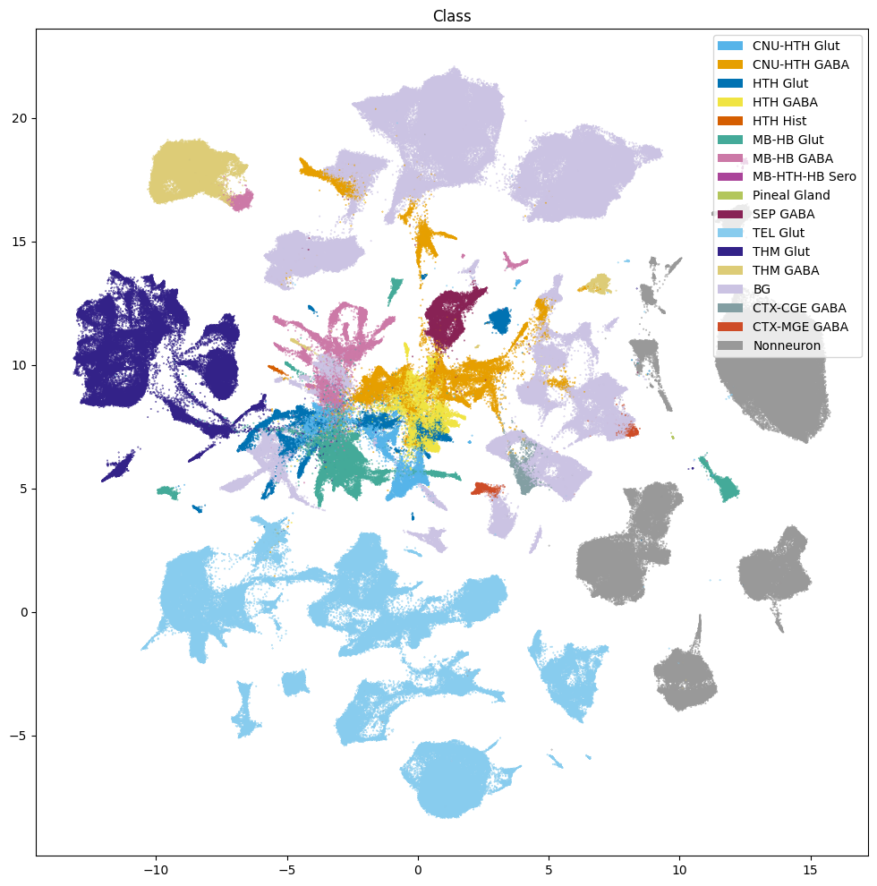
# We Suppress the group names here due to the large number of Groups. Uncomment the line below to show them.
fig, ax = plot_umap(
cell_extended['x'],
cell_extended['y'],
cc=cell_extended['Group_color'],
# labels=cell_extended['Group'],
term_orders=cell_extended['Group_order'],
fig_width=18,
fig_height=18
)
res = ax.set_title("Group")
plt.show()
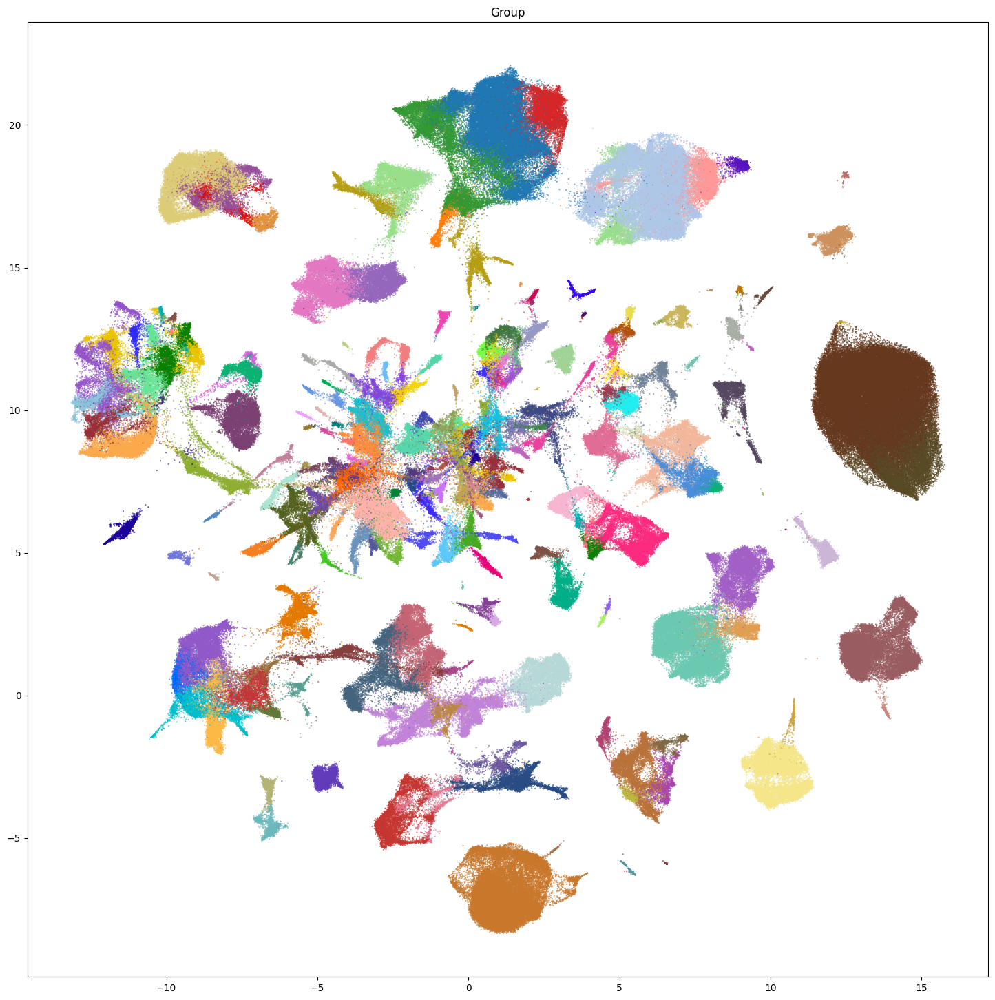
fig, ax = plot_umap(
cell_extended['x'],
cell_extended['y'],
cc=cell_extended['Cluster_color'],
term_orders=cell_extended['Cluster_order'],
fig_width=18,
fig_height=18
)
res = ax.set_title("Cluster")
plt.show()
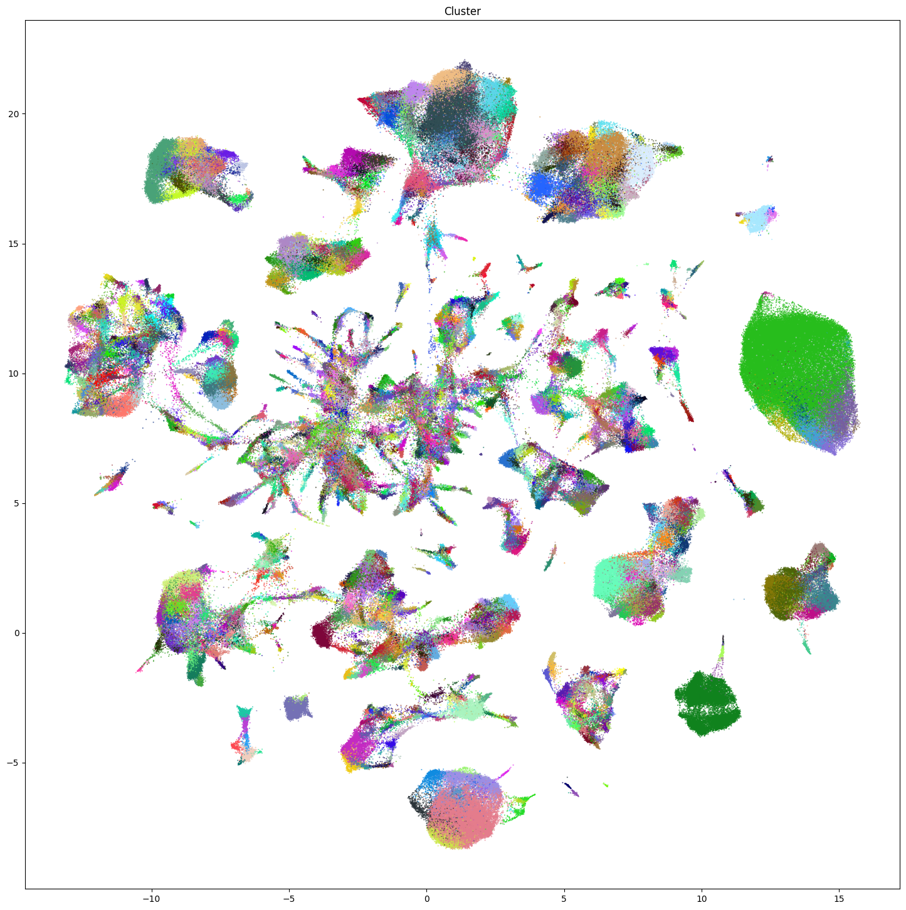
Region and Neurotransmitter#
Additionally from the taxonomy, for each celltype at the Cluster and Group level, we have inferred region information and neurotransmitter information.
We load both tables below and merge them into our cell_extended table.
cluster_to_dominant_region = abc_cache.get_metadata_dataframe(
directory='HMBA-Subcortex-taxonomy-Marmoset',
file_name='cluster_to_dominant_region',
).set_index('cluster_alias')
cluster_to_neurotransmitter = abc_cache.get_metadata_dataframe(
directory='HMBA-Subcortex-taxonomy-Marmoset',
file_name='cluster_to_neurotransmitter',
).set_index('cluster_alias')
cluster_to_dominant_region.csv: 100%|██████████| 35.5k/35.5k [00:00<00:00, 225kMB/s]
cluster_to_neurotransmitter.csv: 100%|██████████| 40.0k/40.0k [00:00<00:00, 185kMB/s]
cell_extended = cell_extended.join(cluster_to_dominant_region, on='cluster_alias')
cell_extended = cell_extended.join(cluster_to_neurotransmitter, on='cluster_alias')
extract_value_set(cell_extended, value_sets, 'Cluster_neurotransmitter', 'neurotransmitter')
extract_value_set(cell_extended, value_sets, 'Group_neurotransmitter', 'neurotransmitter')
extract_value_set(cell_extended, value_sets, 'Cluster_dominant_region', 'dominant_region')
extract_value_set(cell_extended, value_sets, 'Group_dominant_region', 'dominant_region')
Plot the Dominant Region at the Group and Cluster level of the taxonomy.
for celltype in ['Group', 'Cluster']:
fig, ax = plot_umap(
cell_extended['x'],
cell_extended['y'],
cc=cell_extended[f'{celltype}_dominant_region_color'],
labels=cell_extended[f'{celltype}_dominant_region'],
term_orders=cell_extended[f'{celltype}_dominant_region_order'],
fig_width=18,
fig_height=18
)
res = ax.set_title(f'{celltype} Dominant Region')
plt.show()
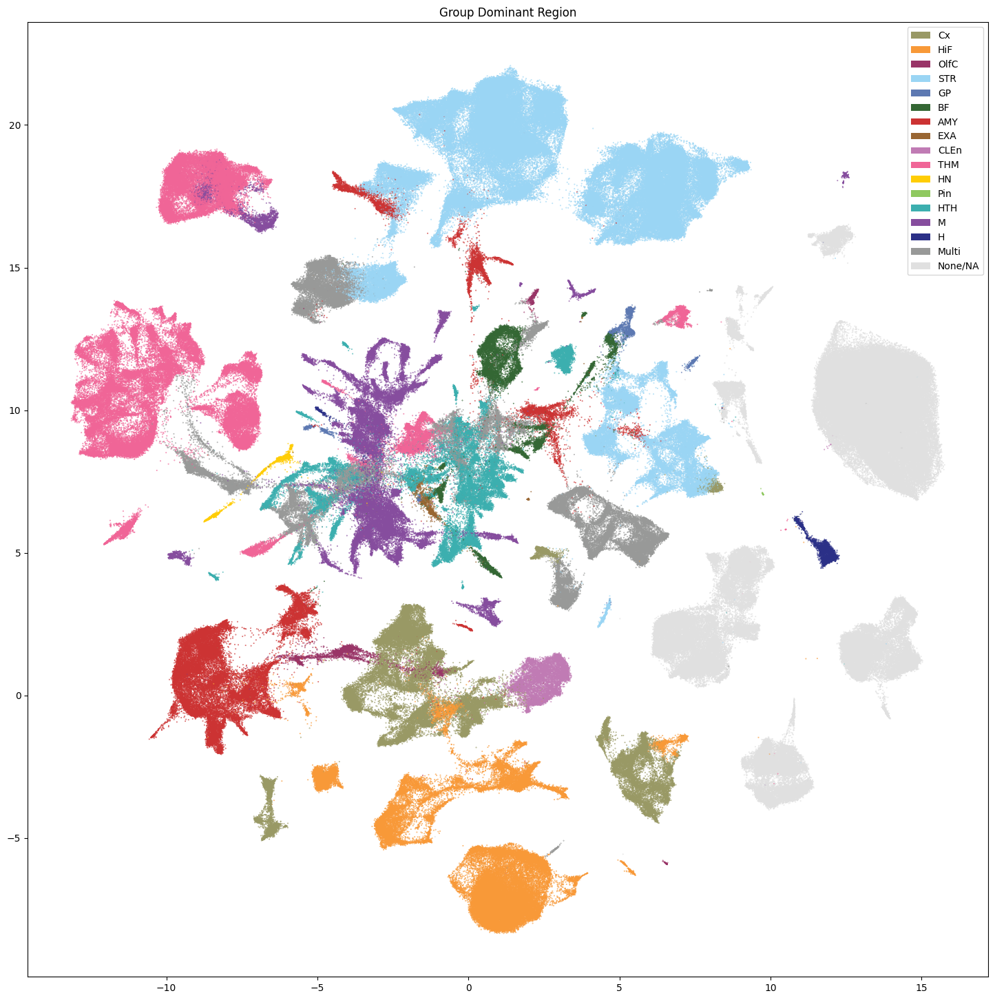
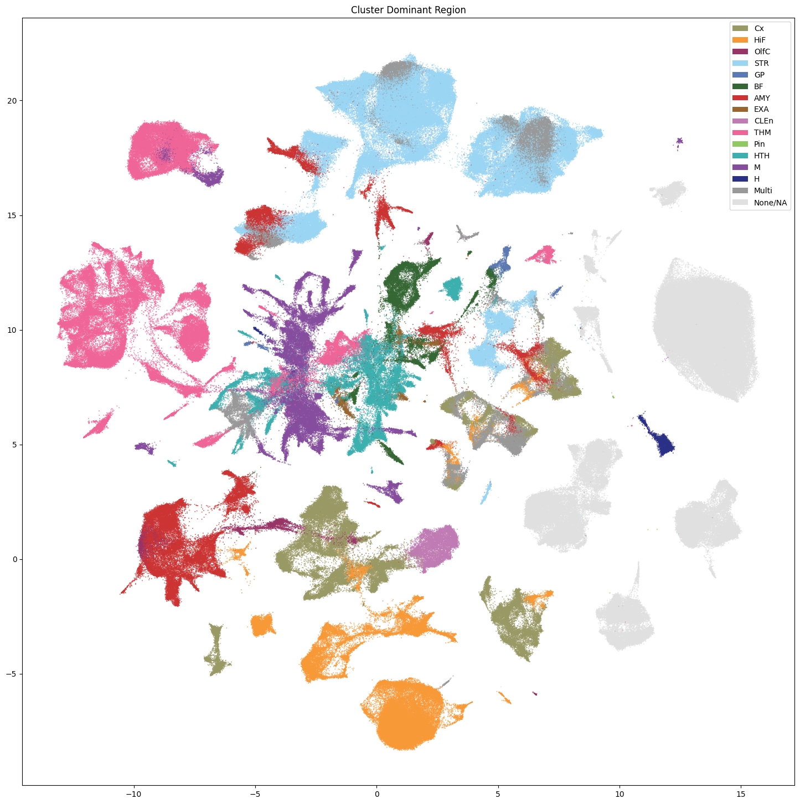
Plot the Group and Cluster level neurotransmitters.
for celltype in ['Group', 'Cluster']:
fig, ax = plot_umap(
cell_extended['x'],
cell_extended['y'],
cc=cell_extended[f'{celltype}_neurotransmitter_color'],
labels=cell_extended[f'{celltype}_neurotransmitter'],
term_orders=cell_extended[f'{celltype}_neurotransmitter_order'],
fig_width=18,
fig_height=18
)
res = ax.set_title(f'{celltype} Neurotransmitter')
plt.show()
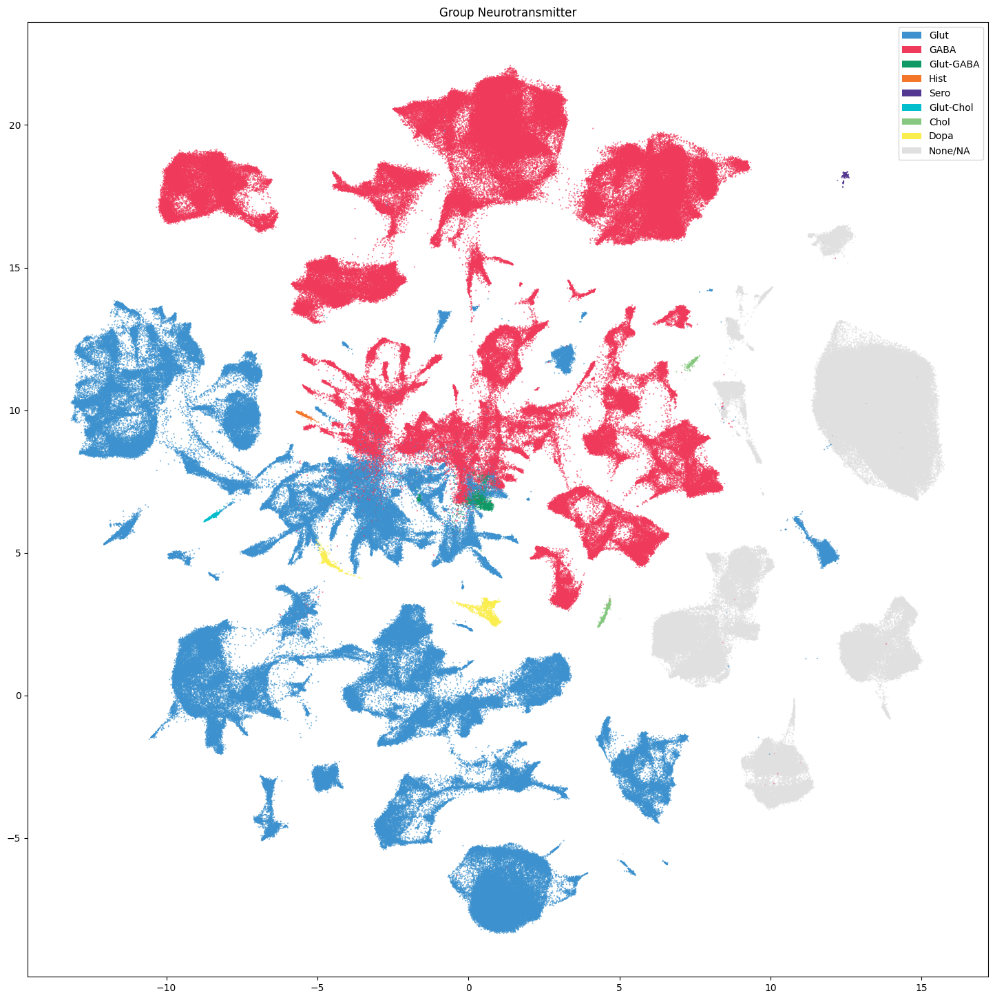
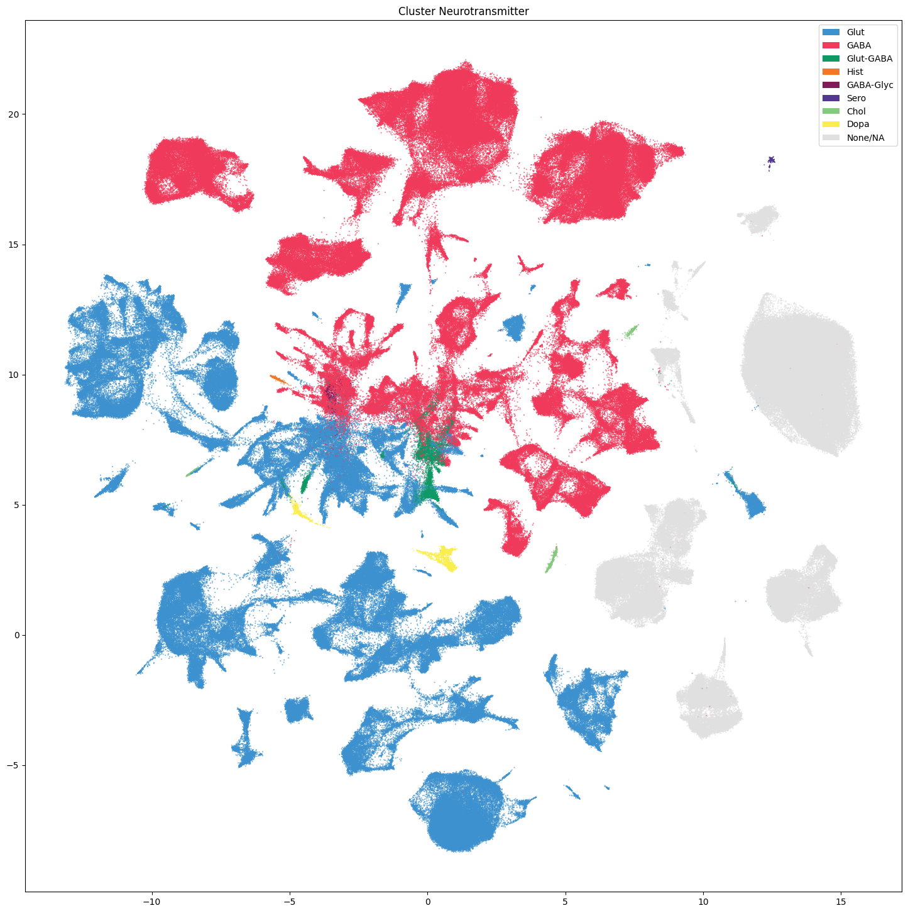
Aggregating Cluster and cells counts.#
Let’s investigate the taxonomy information a bit more. In this section, we’ll create bar plots showing the number of Cluster and cells at each level in the taxonomy.
First, we need to compute the number of Cluster that are in each of the cell type taxons above it. This is accomplished by a simple groupby in Pandas.
term_cluster_count = membership_with_cluster_info.reset_index().groupby(
['cluster_annotation_term_label']
)[['cluster_alias']].count()
term_cluster_count.columns = ['number_of_clusters']
term_cluster_count.head()
| number_of_clusters | |
|---|---|
| cluster_annotation_term_label | |
| CS20260831_LVL0_00 | 58 |
| CS20260831_LVL0_01 | 130 |
| CS20260831_LVL0_02 | 76 |
| CS20260831_LVL0_03 | 79 |
| CS20260831_LVL0_04 | 1 |
term_cell_count = membership_with_cluster_info.reset_index().groupby(
['cluster_annotation_term_label']
)[['number_of_cells']].sum()
term_cell_count.head()
| number_of_cells | |
|---|---|
| cluster_annotation_term_label | |
| CS20260831_LVL0_00 | 10719 |
| CS20260831_LVL0_01 | 23004 |
| CS20260831_LVL0_02 | 14451 |
| CS20260831_LVL0_03 | 10165 |
| CS20260831_LVL0_04 | 253 |
# Join counts with the term dataframe
term_with_counts = cluster_annotation_term.join(term_cluster_count)
term_with_counts = term_with_counts.join(term_cell_count)
term_with_counts.head()
| name | cluster_annotation_term_set_label | cluster_annotation_term_set_name | color_hex_triplet | term_order | term_set_order | parent_term_label | parent_term_name | parent_term_set_label | external_label | number_of_clusters | number_of_cells | |
|---|---|---|---|---|---|---|---|---|---|---|---|---|
| cluster_annotation_term_label | ||||||||||||
| CS20260831_LVL0_00 | CNU-HTH Glut | CCN20260831_LVL0 | Class | #56B4E9 | 1 | 0 | NaN | NaN | NaN | NaN | 58 | 10719 |
| CS20260831_LVL0_01 | CNU-HTH GABA | CCN20260831_LVL0 | Class | #E69F00 | 2 | 0 | NaN | NaN | NaN | NaN | 130 | 23004 |
| CS20260831_LVL0_02 | HTH Glut | CCN20260831_LVL0 | Class | #0072B2 | 3 | 0 | NaN | NaN | NaN | NaN | 76 | 14451 |
| CS20260831_LVL0_03 | HTH GABA | CCN20260831_LVL0 | Class | #F0E442 | 4 | 0 | NaN | NaN | NaN | NaN | 79 | 10165 |
| CS20260831_LVL0_04 | HTH Hist | CCN20260831_LVL0 | Class | #D55E00 | 5 | 0 | NaN | NaN | NaN | NaN | 1 | 253 |
Below we create a function to plot the cluster and cell counts in a bar graph, coloring by the associated taxon level.
def bar_plot_by_level_and_type(df: pd.DataFrame, level: str, fig_width: float = 8.5, fig_height: float = 4):
"""Plot the number of cells by the specified level.
Parameters
----------
df : pd.DataFrame
DataFrame containing cluster annotation terms with counts.
level : str
The level of the taxonomy to plot (e.g., 'Neighborhood', 'Class', 'Subclass', 'Group', 'Cluster').
fig_width : float, optional
Width of the figure in inches. Default is 8.5.
fig_height : float, optional
Height of the figure in inches. Default is 4.
"""
fig, ax = plt.subplots(1, 2)
fig.set_size_inches(fig_width, fig_height)
for idx, ctype in enumerate(['clusters', 'cells']):
pred = (df['cluster_annotation_term_set_name'] == level)
sort_order = np.argsort(df[pred]['term_order'])
names = df[pred]['name'].iloc[sort_order]
counts = df[pred]['number_of_%s' % ctype].iloc[sort_order]
colors = df[pred]['color_hex_triplet'].iloc[sort_order]
ax[idx].barh(names, counts, color=colors)
ax[idx].set_title('Number of %s by %s' % (ctype,level))
ax[idx].set_xlabel('Number of %s' % ctype)
if ctype == 'cells':
ax[idx].set_xscale('log')
if idx > 0:
ax[idx].set_yticklabels([])
return fig, ax
Now let’s plot the counts for each of the taxonomy levels above Cluster.
fig, ax = bar_plot_by_level_and_type(term_with_counts, 'Class')
plt.show()
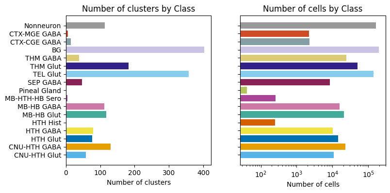
fig, ax = bar_plot_by_level_and_type(term_with_counts, 'Group')
fig.set_size_inches(10, 35)
plt.show()
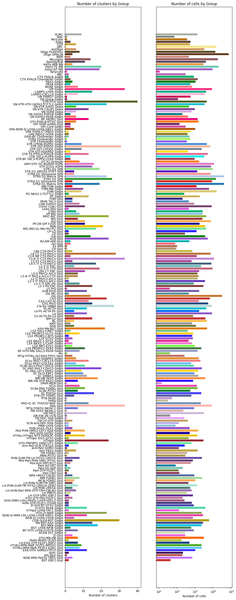
Visualizing the Subcortex taxonomy#
Term sets: Class, Group, and Cluster define the cross-species taxonomy. We can visualize the taxonomy as a sunburst diagram that shows the single inheritance hierarchy through a series of rings, that are sliced for each annotation term. Each ring corresponds to a level in the hierarchy. We have ordered the rings so that the Neighborhood level. Rings are divided based on their hierarchical relationship to the parent slice. We use the number of cells in each taxon to define the angle of the taxon in the sunburst diagram.
levels = ['Class', 'Group', 'Cluster']
df = {}
# Copy the term order of the parent into each of the level below it.
if term_with_counts.index.name != 'cluster_annotation_term_label':
term_with_counts = term_with_counts.set_index('cluster_annotation_term_label')
term_with_counts['parent_order'] = ""
for idx, row in term_with_counts.iterrows():
if pd.isna(row['parent_term_label']):
continue
term_with_counts.loc[idx, 'parent_order'] = term_with_counts.loc[row['parent_term_label']]['term_order'].astype(str)
term_with_counts = term_with_counts.reset_index()
for lvl in levels:
pred = term_with_counts['cluster_annotation_term_set_name'] == lvl
df[lvl] = term_with_counts[pred]
df[lvl] = df[lvl].sort_values('term_order')
fig, ax = plt.subplots()
fig.set_size_inches(10, 10)
size = 0.15
for i, lvl in enumerate(levels):
if lvl == 'Class':
ax.pie(df[lvl]['number_of_clusters'],
colors=df[lvl]['color_hex_triplet'],
labels = df[lvl]['name'],
rotatelabels=True,
labeldistance=1.025,
radius=1,
wedgeprops=dict(width=size, edgecolor=None),
startangle=0)
else :
ax.pie(df[lvl]['number_of_clusters'],
colors=df[lvl]['color_hex_triplet'],
radius=1-i*size,
wedgeprops=dict(width=size, edgecolor=None),
startangle=0)
term_with_counts = term_with_counts.set_index('cluster_annotation_term_label')
plt.show()
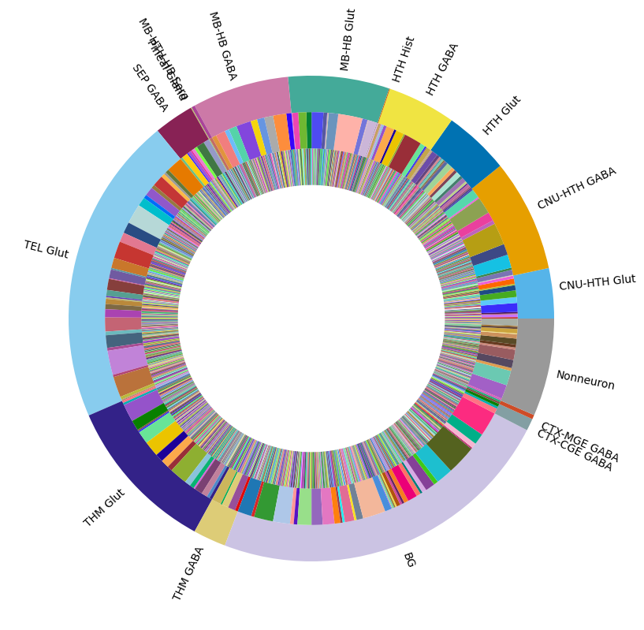
In the next tutorial, we show how to access and use HMBA-Subcortex gene expression data.